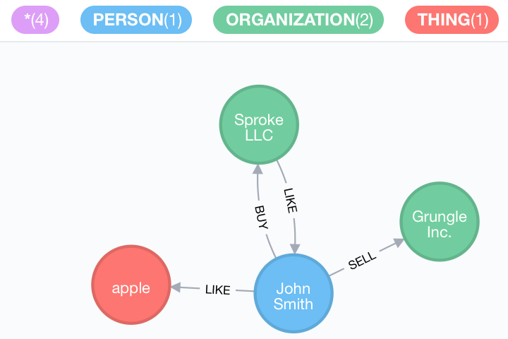

<div class="row">
    <div class="col-sm-12">

        <h3>Research focus: Computational Semantics and Pragmatics</h3>

        <p>I am working on algorithms and formal models for computational semantics and pragmatics. The challenge can be
            described as:</p>

        <ul>
            <li>Extraction of core semantic concepts and relations, that is Entities and Relations from unstructured
                text.
            </li>
            <li>Mapping these Entities and Relations into (Knowledge) Graph representations.</li>
            <li>Analyzing hidden properties and relations using formal analyses of Implicatures and Presuppositions.
            </li>
        </ul>

        <p>As for the extraction of semantic concepts and relations I developed an Open Information Extraction (OpenIE)
            platform that is based on various NLP components to analyze words, clauses, sentences, and paragraphs of
            text, and to detect core semantic relations that represent the predicate and its arguments. In simple terms,
            the task is to analyze input like:</p>

        <ul>
            <li>(...) <i>It's a country that has the second largest global defense budget</i> (...)
        </ul>

        <p>and map it to:</p>

        <ul>
            <li>China --> has --> second largest global defense budget</li>
        </ul>

        <p>It is easy to see how such relations, once extracted from unstructured text could be mapped into graph
            representations using various NLP components, as for example constituent parsers, dependency parsers, named
            entity recognition, anaphora resolution. Thus, the sequence of base sentences:</p>

        <p style="text-align: center;"><i>John Smith sold Grungle Inc. He bought Sproke LLC. Sproke LLC likes him. He
            likes apples.</i></p>

        <p>would be rendered as a graph in the following way:</p>

        <p style="text-align: center;"></p>

        <p>My interest, among others, is in:</p>

        <ul>
            <li>Identifying the most specific semantic type of every entity using general knowledge graphs, ontologies,
                or other forms of encoded world knowledge. In the graph above, what we want to achieve is a more
                detailed typing of the organisations <i>Grungle Inc.</i> and <i>Sproke LLC</i>, as well as a more
                detailed specification of <i>apple</i> not as a <b>THING</b>, but as a <b>FRUIT</b>. I use embeddings
                and vector models to identify the most specific hypernym for a concept in knowledge graphs like YAGO or
                DBpedia.
            </li>

            <li>Expanding the knowledge or concept graph using the analysis of <i>implicatures</i> and <i>presuppositions</i>
                for every utterance or sentence.
                <ul>
                    <li>Implicatures, for example, could be resulting from conversations, as for example, when in a
                        conversation speaker A says to speaker B: "<i>I bought the black dress.</i>", we might
                        immediately conclude that A and B already talked about the event of <i>buyin a dress</i>
                        earlier, in fact, about the one <i>black dress</i>. We know this, because speaker A used a
                        definite article with the direct object. We also know that speaker A had more than one dress to
                        chose from and that none of the other dresses is black. We can derive this from the specificity
                        properties of the direct object noun phrase.
                    </li>
                    <li>Presupposition would be all the relevant facts or propositions that should be true, if a
                        particular utterance or sentence should be assumed to be true. For example, if some speaker A
                        says: "<i>Susan is walking her dog.</i>", we can conclude various other facts that need to be
                        true, for
                        example: "<i>Susan owns or possesses a dog.</i>", "<i>Susan walks at the time of the
                            utterance.</i>", "<i>Susan's
                            dog walks at the time of the utterance.</i>", and so on. We can compute and represent for
                        further analysis and
                        study the presuppositions as additional concept relations together with the extracted ones.
                    </li>
                </ul>
            </li>

            <li>Analyzing the temporal logic and sequence of events, and causalities. This has to do with analyzing the
                tense of a sentence or clause, and its scope over other clauses and predicative relations. For example,
                in a sentence like "<i>John said that Peter bought a new car.</i>" the two events are ordered in time,
                that is "<i>John say X</i>" is preceded by "<i>Peter buy car</i>". This is not true in a sentence like "<i>John
                    said that Peter will buy a new car.</i>". The goal is to order all relevant events extracted from
                unstructured text along the time axis and provide a flow-analysis of the event sequence.
            </li>
        </ul>

        <p>Analyzing Implicatures and Presuppositions, the semantics and pragmatics of text, requires not only modeling
            of general and universal linguistic properties, but also domain specific knowledge. To analyze very specific
            semantic properties in the medical domain, for example, I utilize knowledge representations and ontologies
            from these specific domains. One example could be that we could conclude that person A <i>has headache</i>
            or <i>uses blood thinners</i> for some reason, if she says or writes that <i>the price for Aspirin went
                up</i>. Such implicatures are generated by looking up properties of specific medicine or chemicals from
            domain specific ontologies, taxonomies, or knowledge representations.</p>

        <p>This kind of OpenIE requires much more sophisticated NLP components than common free tools and pipelines
            provide. The experiments involve processing of business, legal, or medical documents, as well as news
            articles.</p>

        <p>My current experimental environment consists of microservices based on C++, Java, Go, and Python components
            coupled in an RPC-based and RESTful architecture. Given suggestions, advice and initial experiments, I am
            working towards a more homogeneous environment, mostly based on Java 10 based services and a RESTful
            architecture.</p>

        <p>If you are interested in working on such an OpenIE and Graph-based system and join my research group, contact
            me please.</p>


        <p>There are various GitHub repositories that I maintain with material and code that explain the project. See
            for more details my GitHub and Bitbucket pages.</p>

    </div>
</div>
